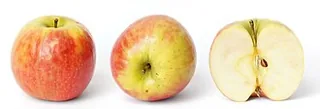
Apple
fir0002 flagstaffotos [at] gmail.com Canon 20D + Sigma 150mm f/2.8
Own work
Original image and attribution · GFDL 1.2Photographs and botanical images from Wikimedia Commons. Each image retains the license listed below. Local copies are resized and converted to WebP, and displayed inside a circular frame.

fir0002 flagstaffotos [at] gmail.com Canon 20D + Sigma 150mm f/2.8
Own work
Original image and attribution · GFDL 1.2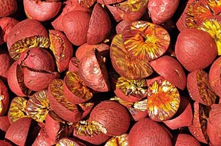
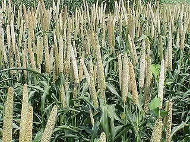
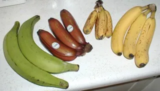
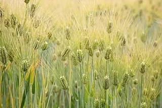
Cliff from Arlington, Virginia, USA
Barley (Hordeum vulgare)
Original image and attribution · CC BY 2.0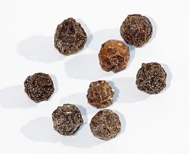
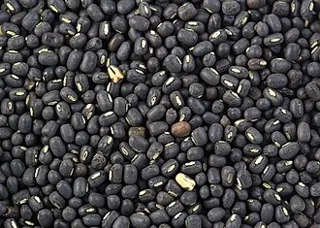
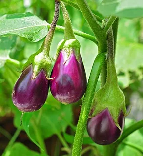
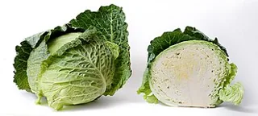
fir0002 flagstaffotos [at] gmail.com Canon 20D + Sigma 150mm f/2.8
Own work
Original image and attribution · GFDL 1.2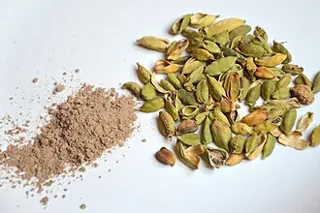
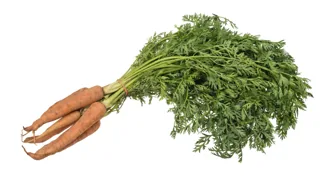
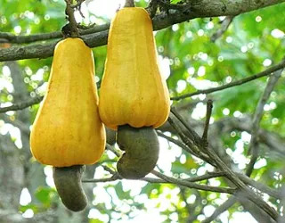
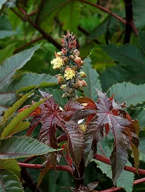
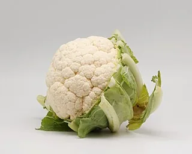
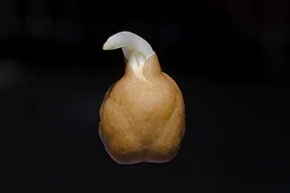
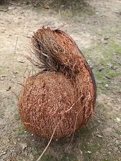
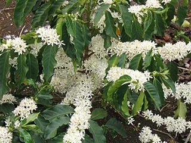
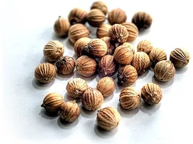
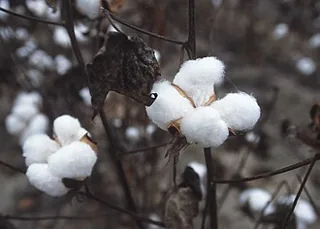
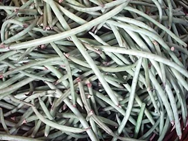
HeraldDesa at English Wikipedia
Transferred from en.wikipedia to Commons.
Original image and attribution · CC BY-SA 3.0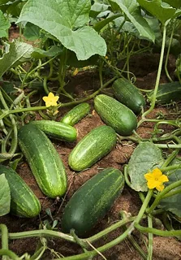
Stephen Ausmus, USDA ARS
This image was released by the Agricultural Research Service, the research agency of the United States Department of Agriculture, with the ID D730-30 (next).
Original image and attribution · Public domain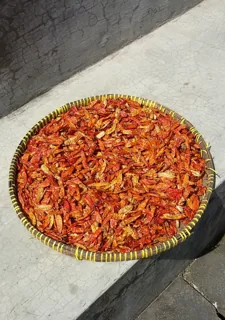
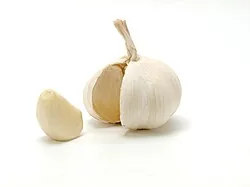
Dubravko Sorić SoraZG on Flickr
https://www.flickr.com/photos/11939863@N08/3793285991/in/photostream/
Original image and attribution · CC BY 2.0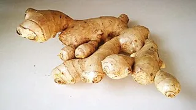
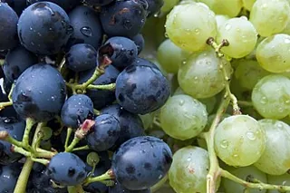
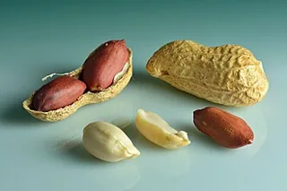
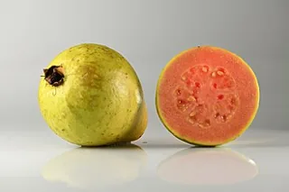
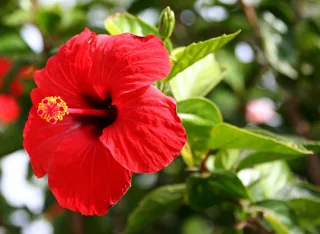
Andy / Andrew Fogg from near Cambridge, UK
can't resist 'em Uploaded by Epibase
Original image and attribution · CC BY 2.0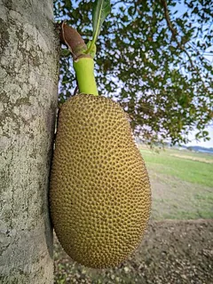
This work was made by Tushar Hossain and released under the license(s) stated below. Please feel free to use it for any purpose as long as you credit Tushar Hossain as author and follow the terms of the chosen license. If you use this work outside of the Wikimedia projects, I would very much like to get a note from you. Thanks!
Own work
Original image and attribution · CC BY-SA 4.0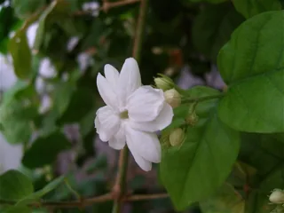
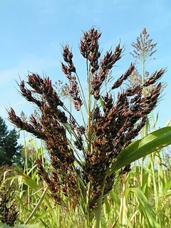
No machine-readable author provided. Pethan assumed (based on copyright claims).
No machine-readable source provided. Own work assumed (based on copyright claims).
Original image and attribution · CC BY-SA 3.0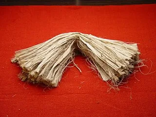
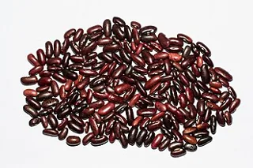
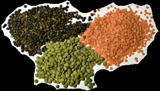
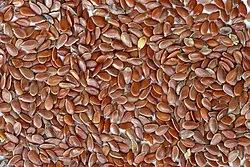
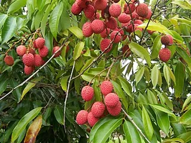
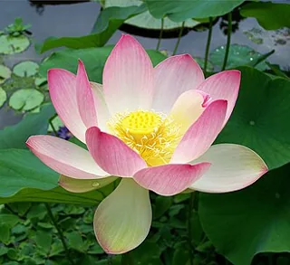
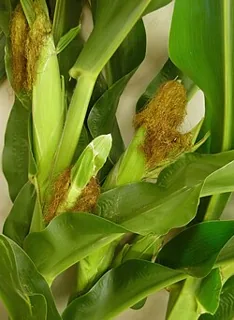
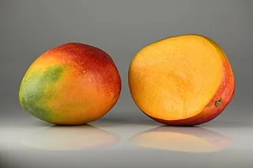
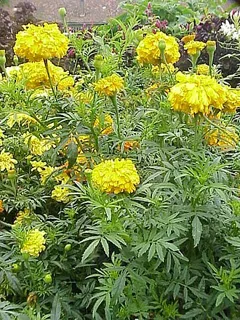
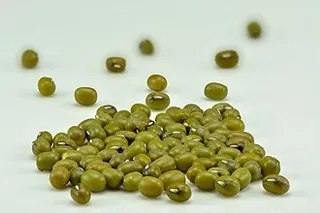
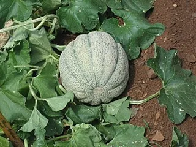
Seth Vidal
originally posted to Flickr as muskmelon
Original image and attribution · CC BY-SA 2.0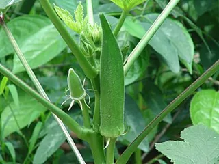
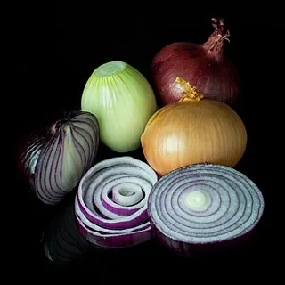
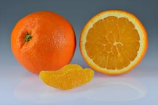
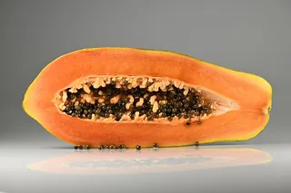
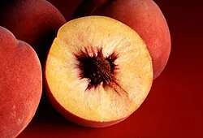
Jack Dykinga, USDA
This image was released by the Agricultural Research Service, the research agency of the United States Department of Agriculture, with the ID K6084-1 (next).
Original image and attribution · Public domain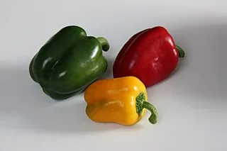
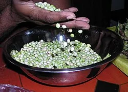
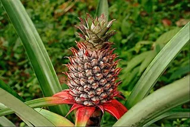
Suniltg at Malayalam Wikipedia
Transferred from ml.wikipedia to Commons by sreejithk2000.
Original image and attribution · CC BY 3.0Scott Bauer, USDA ARS
This image was released by the Agricultural Research Service, the research agency of the United States Department of Agriculture, with the ID K9152-1 (next).
Original image and attribution · Public domainInfrogmation of New Orleans
Photo by Infrogmation
Original image and attribution · CC BY-SA 3.0mage taken by J. Wilson, USDA-ARS while in Ethiopia in 2002.
Original image and attribution · Public domainChina News Service
YouTube: 第三代杂交水稻晚稻亩产911.7公斤 周年亩产超1500公斤 – View/save archived versions on archive.org
Original image and attribution · CC BY 3.0Fred Hsu (Wikipedia:User:Fred Hsu on en.wikipedia)
Own work
Original image and attribution · CC BY-SA 3.0For images licensed under the GNU Free Documentation License, see the included license text.